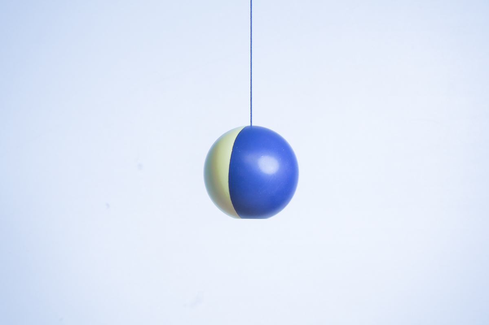
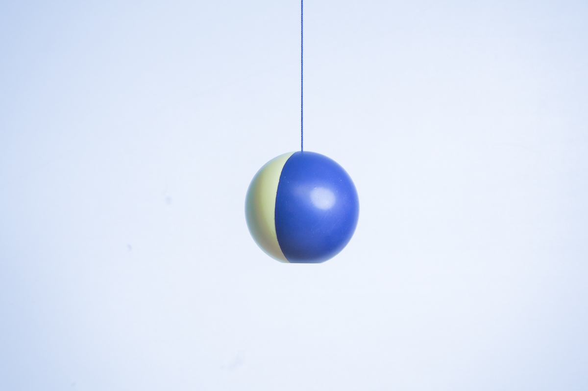

神戸芸術工科大学 芸術工学部 プロダクト・インテリアデザイン学科 3年 山地涼介
けん玉の楽しさとは何か。
お皿に乗ったときの達成感、感触、音、様々なものがあります。
今回は新たに「視覚」による楽しさをデザインしました。

季節が移り変わることで変化するものの中に月があります。
moonはけん玉の「玉」を「月」に見立て、お皿に乗せた玉の向きによって
満月、新月、三日月とさまざまな表情を見せてくれます。
 
